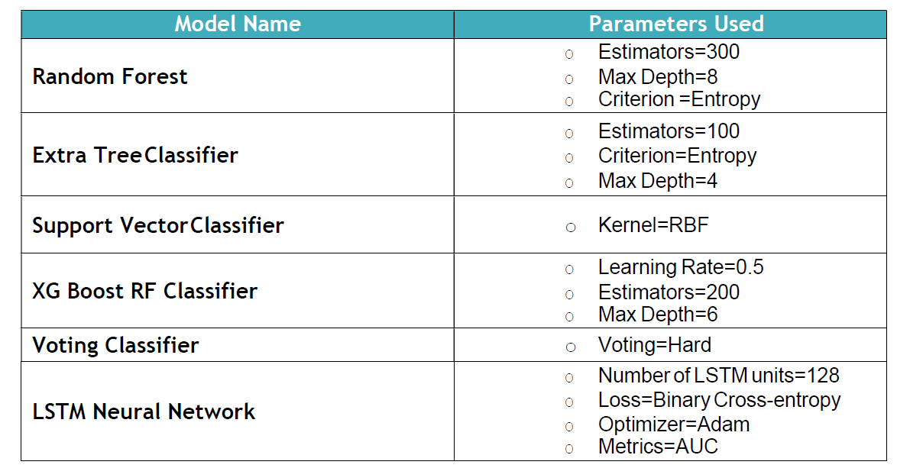

Due to the high commercial potential, Craigslist is a target for scammers. This project is to build a scam classification model in Python which automatically detects if a particular ad listing is a scam or not based on predefined business rules
Previous methods for Web scam detection mainly used link-based features and content-based features like n-grams to distinguish between scam and non-scam pages. However, link-based capabilities are useless in this particular sector because online marketing posts rarely link to one another. The fact that scam posts frequently contain misleading information sets them apart from non-scam advertisement posts in terms of substance. For instance, a scam advertisement post can draw customers by setting an inflated asking price. The content-based features are unable to capture this trait. Consequently, typical methods for detecting Web scam are ineffective in this field.
To effectively harvest that data, we used Python libraries requests and BeautifulSoup. Here are the steps used to scrape data:
• Inspected the HTML structure of Craiglist/Cars+Trucks with Chrome’s browser’s developer tools • Deciphered data encoded in URLs • Used requests and BeautifulSoup for scraping and parsing URL information of each ad listing from the Web • Stepped through a web scraping pipeline from start to finish • Built a script that fetches URLs from the website and saved the URLs in Excel • Saved the URLs scraped from anchor tags of each listing
To create our target URL, we split it into two parts:
• The base URL represents the path to the search functionality of the website. The base URL is https://chicago.craigslist.org/search/chicago-il/cta? This URL directly goes to our desired category of cars and automobiles. • The specific site location that limits our results for only 60 mile radius of Chicago: “lat=41.7434&lon=-87.7104&search_distance=60”• As one page had only 120 records, we noticed that when we clicked “Next” at the bottom of the page, our URL changed which further appended “s=240&” in the URL. We then tweaked our code to include s=240 then 360 and so on.• Libraries used - Pandas, BeautifulSoup, Requests
• Before feeding the textual columns into the models we had to perform the following preprocessing steps on the “Clean Description” columns: • Removal of HTML Tags such as ‘<a>’, • Removal of Punctuations • Removal of most common words occurring across all the documents • Tokenization of sentences • Lemmatization of tokens • Stopwords removal • TF-IDF vectorization to finally convert the textual data into numerical vectors • For preparing the data for advanced modelling techniques such as Recurrent LSTM NN, further pre-processing had to be performed on the textual data such as - Converting text to sequence and pre-padding the sequences
• Since our data was highly imbalanced (4% Probable Scam labelled as True), we had to stratify the data set and split it into training and testing. We split the vectorized data in a ratio of 80-20 of training and validation. • We implemented seven machine learning algorithms out of which 6 are classical ones such as tree-based/kernel based or an ensemble of these. We implemented a state of the art technique as well - Recurrent LSTM Neural Network, which generally works well on textual data.
• The evaluation metric we chose for selection of best model out of all the models we implemented was AUC ROC score or “The Area Under ROC Curve”. • We wanted to maintain a balance between both False Positive Rate and True Positive Rate, as the genuine ad listings being predicted as scam (False Positive) would prove to be an impairment to the craigslist’s business. • Based on all the models we trained, LSTM gives us the best validation ROC AUC Score of 0.7398 on test data set.
• For future work, we plan to extend the experimental dataset.Since this is a highly imbalanced classification problem, if we randomly pick a sample of instances for judgement, there are very few scam instances in the sample. To overcome this, we plan to use other advanced models to pick instances that are likely to be scam for judgment. • We can also include image classification as a potential method to identify scams. Like for instance, do the images contain any text, if they do is it legitimate or not, are the pictures available on Google like stock images or not (if yes, they are likely scams). There is definitely a lot of scope, and this area is a vast area of research and our project was an initial step towards this.